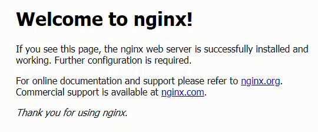

Nginx Configuration
The next step is to modify the Nginx config file so that Nginx uses our SSL certificates and routes requests on to JupyterHub.
Introduction
The Nginx configuration step was the hardest part for me when I set up my first JupyterHub server. The Nginx config file isn't Python code or a bash script. I went through many different variations until I finally got a config file that worked.
The big initial problem was that I copied the sample Nginx config that's up on the JupyterHub docs. But the Nginx config posted on the JupyterHub docs is not a complete Nginx config, it contains just the server portion. I didn't know that the whole server portion needed to be enclosed in another frame.
Modify nginx.conf
To modify nginx.conf, cd into the /etc/nginx directory. The nginx.conf file should be there along with a couple other files and directories.
$ cd /etc/nginx
$ ls
conf.d koi-utf nginx.conf sites-available ssl
fastcgi.conf koi-win proxy_params sites-enabled uwsgi_params
fastcgi_params mime.types scgi_params snippets win-utf
$ sudo nano nginx.conf
The nginx config that eventually worked for me is below. It can also be found here.
Note the line which shows the path to the SSL certificates. This will change based on your domain name and where certbot saved the .pem files to. Remember to change the domain name in the line server_name mydomain.org; to your domain name.
## /etc/nginx/nginx.conf
## Based on: https://github.com/calpolydatascience/jupyterhub-deploy-data301/blob/master/roles/nginx/templates/nginx.conf.j2
user www-data;
worker_processes 4;
pid /run/nginx.pid;
events {
worker_connections 1024;
# multi_accept on;
}
http {
include /etc/nginx/mime.types;
default_type application/octet-stream;
#top-level http config for websocket headers
# from https://github.com/jupyterhub/jupyterhub/blob/master/docs/source/referen$
map $http_upgrade $connection_upgrade {
default upgrade;
'' close;
}
# All regular http requests on port 80 become SSL/HTTPS requests on port 32
server {
listen 80;
# !!! make sure to change this to your domain !!!
server_name mydomain.org;
# Tell all requests to port 80 to be 302 redirected to HTTPS
return 302 https://$host$request_uri;
}
server {
#listen 443 ssl default_server;
listen 443;
ssl on;
# !!! make sure to change this to your domain !!!
server_name mydomain.org;
## SSL Protocals
# !!! make sure to change this to your domain !!!
ssl_certificate /etc/letsencrypt/live/mydomain.org/fullchain.pem;
ssl_certificate_key /etc/letsencrypt/live/mydomain.org/privkey.pem;
ssl_protocols TLSv1 TLSv1.1 TLSv1.2;
ssl_prefer_server_ciphers on;
ssl_dhparam /srv/jupyterhub/dhparam.pem;
# Make site accessible from http://localhost/ server_name localhost; certs sent to the client in SERVER HELLO are concatenated in
ssl_session_timeout 1d;
ssl_session_cache shared:SSL:50m;
ssl_stapling on;
ssl_stapling_verify on;
# modern configuration. tweak to your needs.
ssl_ciphers
'ECDHE-ECDSA-AES256-GCM-SHA384:ECDHE-RSA-AES256-GCM-SHA384:ECDHE-ECDSA-CHACHA20-POLY1305:ECDHE-RSA-CHACHA20-POLY1305:ECDHE-ECDSA-AES128-GCM-SHA256:ECDHE-ECDSA-AES256-SHA384:ECDHE-RSA-AES256-SHA384:ECDHE-ECDSA-AES128-SHA256:ECDHE-RSA-AES128-SHA256';
# HSTS (ngx_http_headers_module is required) (15768000 seconds = 6 months)
add_header Strict-Transport-Security max-age=15768000;
location / {
proxy_pass http://127.0.0.1:8000;
proxy_set_header X-Real-IP $remote_addr;
proxy_set_header Host $host;
proxy_set_header X-Forwarded-For $proxy_add_x_forwarded_for;
proxy_set_header X-NginX-Proxy true;
#proxy_http_version 1.1;
proxy_set_header Upgrade $http_upgrade;
proxy_set_header Connection "upgrade";
}
location ~ /.well-known {
allow all;
}
}
}
Save and exit with [Ctrl] + [x] and [Enter]
Restart Nginx
Now let's restart Nginx with our new configuration in place.
$ sudo systemctl stop nginx
$ sudo systemctl start nginx
$ sudo systemctl status nginx
# [ctrl-c] to exit
If you have trouble with the restart, a useful command is:
$ nginx -t
When we browse to our domain name, we can see Nginx is running. Make sure to browse to https://mydomain.org and not https://www.mydomain.org. The cirtbot ssl cirtificut we got is only for https://mydomain.org and not the url that starts with www..

Next Steps
The next step configure JupyterHub by creating and modifying a jupyterhub_config.py file.